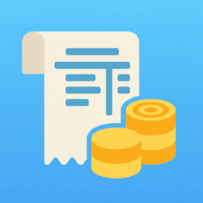

Tip Tracker
Tip Tracker is a simple and easy-to-use app for recording daily tip income, work hours, and notes.
Add each tip entry with a date, tip amount, hours worked, and optional notes, and the app automatically summarizes your earnings.
You can review your tip income for today, yesterday, this week, last week, this month, and last month to better understand your earnings over time.
This app is useful for servers, bartenders, waiters, waitresses, delivery drivers, gig workers, hair stylists, valets, and anyone who wants to keep a simple record of tip income.
Features
- Record daily tip income quickly
- Add date, tip amount, hours worked, and notes
- View today's tip total
- View yesterday's tip total
- Compare this week and last week
- Compare this month and last month
- Calculate average tips per hour
- Review tip history
- Edit saved entries anytime
- Delete individual entries
- Clear all entries when needed
- Export tip records as a CSV file
- Simple and clean design
- Optional ad removal
Frequently Asked Questions
-
Q: What does this app do?
A: Tip Tracker helps you record and review your tip income. You can enter tip amounts, hours worked, dates, and notes, then check your daily, weekly, and monthly totals.
-
Q: Who is this app for?
A: This app is designed for servers, bartenders, waiters, waitresses, delivery drivers, gig workers, hair stylists, valets, and anyone who earns tips.
-
Q: Can I track my work hours?
A: Yes. You can enter hours worked for each tip entry. The app can use this to calculate average tips per hour.
-
Q: Can I add notes to each entry?
A: Yes. You can add optional notes for each entry, such as shift details, workplace, cash tips, card tips, or other reminders.
-
Q: What summaries does the app show?
A: The app shows tip totals for today, yesterday, this week, last week, this month, and last month.
-
Q: Does the app calculate average tips per hour?
A: Yes. If you enter hours worked, the app can show average tips per hour for the current week and current month.
-
Q: Can I edit an entry after saving it?
A: Yes. You can tap a saved history entry to edit the date, tip amount, hours worked, or notes.
-
Q: Can I delete an entry?
A: Yes. You can delete an individual entry from the edit screen. You can also clear all saved entries if needed.
-
Q: Can I export my records?
A: Yes. You can export your saved tip records as a CSV file.
-
Q: Is this app a tax, payroll, or accounting service?
A: No. This app is a personal tracking tool. It does not calculate official taxes, payroll, deductions, benefits, or accounting reports.
-
Q: Where is my data stored?
A: Your tip entries are stored locally on your device. The app does not require an account to record tips.
-
Q: Can I remove ads?
A: Yes. You can remove banner ads with an optional in-app purchase.
-
Q: Do I need an internet connection?
A: Tip tracking itself works offline. An internet connection may be required to load ads, export or share files through system services, or complete in-app purchases.
📩 Contact
If you have any questions or encounter issues, feel free to contact us:
← Back to Support Center